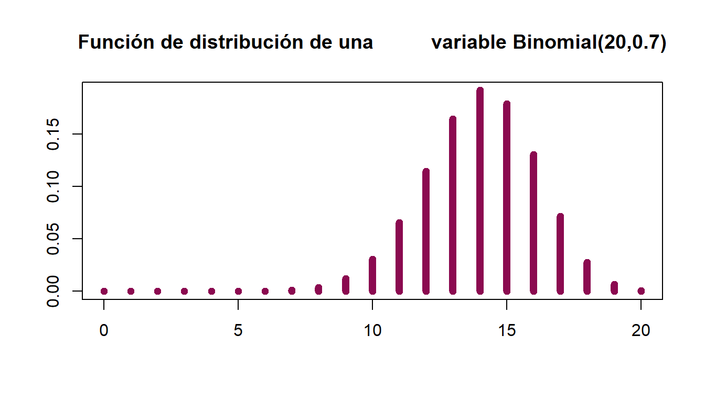

Capítulo 2 Prueba de Proporciones
Supongamos que un científico desea saber si la tasa de mortalidad va en aumento, si la tasa de pobreza está cambiando o si la tasa de algún grupo cívico está a favor de una política en particular. En muchos casos existe una proporción hipotética \(p\) de una población en estudio y una poporción específica \(p^*\) y se pretende llevar a cabo una comparación para saber si la proporción hipotética es igual, menor o mayor que la proporción específica \(p^*\). Una prueba de proporciones puede ser útil para ayudar a responder este tipo de preguntas.
2.1 Datos
Los datos consisten en una muestra
\[X_{1},X_{2},X_{3},\cdots,X_{n} \mbox{ una muestra aleatoria de tamaño n de la población.}\]
cuyo resultado se puede clasificar en dos y sólo dos categorías “categoría 1” o “categoría 2.” El número de observaciones en la categoría 1 es \(O_{1}\) y el número de observaciones en la categoría 2 es \(O_{2}=n-O_{1}\)
2.2 Supuestos
Los \(n\) ensayos son mutuamente independientes.
La probabilidad \(p\) de que el resultado de cada ensayo caiga en la categoría 1 es la misma en cada uno de los ensayos.
2.3 Estadístico de Prueba
Como nos preocupa la probabilidad del resultado “clase 1,” dejaremos que el estadístico de prueba \(T\) sea el número de veces que el resultado es “clase 1”. Es decir, si \(n<20\) utilizar el estadístico
\[T=O_{1}\] \[ T \sim Bin (n,p^*)\] Donde \(p^*\) es la probabilidad especificada en la hipótesis nula de nuestra prueba a realizar y \(n\) es el tamaño de la muestra.
Por otro lado, si \(n\geq20\) puede resultar más sencillo utilizar una aproximación normal para realizar la prueba, en dicho caso se puede utilizar el siguiente cuantil:
\[t=np+Z_{q}\sqrt{np(1-p)}\] Donde \(Z_{q}\) es el cuantil de una distribución normal estándar que se puede obtener en la tabla correspondiente1.
Dependiendo del planteamiento de nuestro problema a resolver se formulan las hipótesis:
2.4 Hipótesis
Caso A (Prueba de dos colas)
\[\textbf{H}_0: p = p^*\] \[vs\] \[\textbf{H}_a: p \neq p^*\]
Regla de decisión
Rechazamos \(H_0\) a un nivel de significancia \(\alpha\) si
\[T \leq t_{1} \ \ \ o \ \ \ T > t_{2}\]
Elegimos \(\alpha_{1}\) y \(\alpha_{2}\), los tamaños de la cola inferior y superior, respectivamente. El tamaño de la prueba es \(\alpha=\alpha_{1}+\alpha_{2}\).
Debemos encontrar \(t_{1}\) y \(t_{2}\) tales que:
\[\mathbf{P}[Y \leq t_{1}]=\alpha_{1} \ \ \ \ \mathbf{P}[Y > t_{2}]=\alpha_{2}\]
Donde \(Y \sim Bin (n,p^*)\).
y calculamos el \(p-value\) de la siguiente manera:
\[p-value=2*min \{ \mathbf{P}[Y\leq T],\mathbf{P}[Y \geq T] \}\]
Sugerimos que si \(n > 20\),el \(p-value\) puede obtenerse usando:
\[\mathbf{P}[Y\leq t_{obs}] \thickapprox \mathcal{N} \left(\frac{t_{obs}-np^*+0.5}{\sqrt{np^*(1-p^*)}}\right)\] y
\[\mathbf{P}[Y\geq t_{obs}] \thickapprox 1-\mathcal{N} \left(\frac{t_{obs}-np^*-0.5}{\sqrt{np^*(1-p^*)}}\right)\] Con \(\mathcal{N}(\cdot)\) la función de distribución de la normal estándar.
Caso B (Prueba de cola inferior)
\[\textbf{H}_0: p \geq p^*\]
\[vs\]
\[\textbf{H}_a: p <p^*\]
Regla de decisión
Rechazamos \(H_0\) a un nivel de significancia \(\alpha\) si
\[T \leq t\]
Elegimos \(\alpha\), el tamaño de la prueba y debemos encontrar \(t\) tal que
\[\mathbf{P}[Y \leq t]=\alpha\]
Donde \(Y \sim Bin (n,p^*)\).
y calculamos el \(p-value\) de la siguiente manera:
\[p-value= \mathbf{P}[Y\leq T]\]
Sugerimos que si \(n > 20\), el \(p-value\) puede obtenerse usando:
\[\mathbf{P}[Y\leq t_{obs}] \thickapprox \mathcal{N} \left(\frac{t_{obs}-np^*+0.5}{\sqrt{np^*(1-p^*)}}\right)\]
Caso C (Prueba de cola superior)
\[\textbf{H}_{0}: p \leq p^*\]
\[vs\]
\[\textbf{H}_{a}: p >p^*\]
Regla de decisión
Rechazamos \(H_0\) a un nivel de significancia \(\alpha\) si
\[T > t\]
Elegimos \(\alpha\), el tamaño de la prueba y debemos encontrar \(t\) tal que
\[\mathbf{P}[Y \leq t]=1-\alpha\]
Donde \(Y \sim Bin (n,p^*)\).
y calculamos el \(p-value\) de la siguiente manera:
\[p-value= \mathbf{P}[Y \geq T]\]
Sugerimos que si \(n > 20\), el \(p-value\) puede obtenerse usando:
\[\mathbf{P}[Y\geq t_{obs}] \thickapprox \mathcal{N} \left(\frac{t_{obs}-np^*-0.5}{\sqrt{np^*(1-p^*)}}\right)\]
2.5 Intervalos de Confianza
En este enfoque lo que se busca es estimar cotas inferiores y superiores \((L,U)\) tales que el intervalo formado por las mismas contenga al parámetro de interés (en este caso una proporción) con una confianza \(1-\alpha\) especificada por el usuario.
Datos
Los datos a los que se les puede aplicar éste método son del mismo que en las pruebas de hipótesis, es decir, una colección \(\{X_{i}\}_{i=1}^n\) de ensayos Bernoulli independientes en dónde se debe poder suponer que la probabilidad de éxito \(p\) se mantiene constante en todos los ensayos.
Supuestos
Los \(n\) ensayos son independientes.
La probabilidad de éxito permanece constante durante todos los ensayos.
La idea detrás del método es encontrar todos los valores de \(p^*\) tales que rechacemos la hipótesis nula.
Hipótesis
\[\textbf{H}_{0}: p = p^*\]
\[vs\]
\[\textbf{H}_{a}: p \neq p^*\]
\(\mathbf{Procedimiento}\)
Fijar el nivel de confianza \(1-\alpha\)
Hallar \(p_{1}\) y \(p_{2}\) tales que:
\[\mathbf{P}[Y\leq O_{1}| \ p=p_{1}]= \alpha_{1} \ \ \ y \ \ \ \mathbf{P}[Y\geq O_{1}| \ p=p_{2}]= \alpha_{2} \] donde \(\alpha=\alpha_{1}+\alpha_{2}\) y \(Y \sim Bin (n,p)\) .
- Hacer \(L= p_{1}\) y \(U=p_{2}\)
Recordemos que mucha de la teoría abarcada en este material esta basado en el libro Conover (1998) y en dicha referencia se pueden encontrar tablas con los valores de los intervalos de confianza para muestras menores a 30, cuando se tienen más grandes, es decir si \(n>30\), se pueden utilizar las siguientes expresiones para el cálculo de los intervalos.
\[L=\frac{O_{1}}{n}-Z_{1-\alpha/2}\sqrt{\frac{O_{1}(n-O_{1})}{n^3}} \ \ \ \ \ U=\frac{O_{1}}{n}+Z_{1-\alpha/2}\sqrt{\frac{O_{1}(n-O_{1})}{n^3}}\]
Ahora aplicaremos lo anterior en un ejemplo ilustrativo:
2.6 Ejemplo
Se tienen 20 graduados del Tecnológico de Texas que presentaron el examen general de leyes y 18 de ellos lo pasaron. Si esta muestra es aleatoria y representativa de todos los estudiantes graduados del Tecnológico de Texas, ¿esto prueba que la probabilidad de que un graduado de esa escuela pase el examen general de leyes es más alto que el promedio del estado, que es del 70%?
Paso 1 Escribimos la prueba a utilizar
La prueba a utilizar Prueba de proporciones caso C cola superior
Paso 2 Formulamos nuestras hipótesis en contexto al problema planteado
\[ \begin{array}{c} \textbf{H}_{0}: \mbox{La probabilidad de que un graduado pase el examen es menor/igual al } 70\%.\\ vs\\ \textbf{H}_{a}: \mbox{La probabilidad de que un graduado pase el examen es mayor al }70\%. \end{array} \]
De manera alternativa:
\[\textbf{H}_{0}: p \leq p^* \ \mbox{es decir}, \ p \leq .70\ \ \ vs \ \ \ \ \textbf{H}_{a}: p >p^* \ \mbox{es decir}, \ \ p > .70\]
Paso 3 Estadístico de prueba
Utilizaremos el estadístico
\[T=O_{1} \ \mbox{número de observaciones de la clase 1.}\] \[T=18 \ \ número\ de\ graduados\ que\ pasaron\ el\ examen\] \[T\sim Bin(20,0.70)\]
Paso 4 Procedimiento completo
Supuestos:
Muestra aleatoria de tamaño 20.
Tomaremos como “éxito” al acreditar el examen.
- \(T=O_{1}=18\) número de éxitos.
- Tomaremos \(\alpha\)= 5%=0.05 el nivel de significancia.
\(n=20\) tamaño de la muestra
\(p^*\)=70%=0.70
Paso 5 Regla de decisión
\[Rechazo \ \ H_0 \ \ si \ \ T>t_{2} \ \ y \ \ \ Rechazo \ \ H_0 \ \ si \ \ p-value<\alpha\]
ya que \(n \geq 20\) puede resultar más sencillo utilizar una aproximación normal para realizar la prueba, en dicho caso se podemos utilizar:
\[t_{2}=np^*+Z_{q}\sqrt{np^*(1-p^*)}\]
\[t_{2}=20*(0.7)+1.65*\sqrt{20*(0.7)*(0.3)} \ \ = 17.38\]
\(\therefore\) como \(T=18>17=t_{2}\) entonces rechazo \(H_0\).
y por otro lado calculamos el \(p-value\) de la siguiente manera:
\[p-value= \mathbf{P}[Y \geq T] \ = \ \mathbf{P}[Y \geq 18]=1-\mathbf{P}[Y < 18]= 0.035\]
\(\therefore\) como \(p-value=0.035<\alpha=0.05\) entonces rechazo \(H_0\).
Paso 6 Conclusión
Existe información suficiente para decir que los alumnos que acreditaron el examen están por arriba del promedio del Estado que es del 70%, en otras palabras la probabilidad de que un graduado del Tecnológico de Texas pase el examen general de leyes es mayor al 70%.
2.7 Ejemplo en R-Studio
Ahora haremos la réplica en R.
La estadística de prueba será \(T=O_1\)
# Datos
T=18 #Número de éxitos
alpha=0.05 #Nivel de significancia
n=20 #Tamaño de la muestra
p=0.70 #Proporción
t=qbinom(.95,n,p) #Valor crítico
t[1] 17pvalue=1-pbinom(17,20,.7) #P-value
#Otra opción sería: 1-pbinom(17,20,.7, lower.tail = F)
pvalue[1] 0.03548313Según el planteamiento de las hipótesis, este es un Caso C (de cola superior), por lo que siguiendo la regla de decisión tenemos que como \(T=18>17=t\), entonces se rechaza \(H_0\) y por lo tanto se concluye que hay información suficiente para decir que la probabilidad de que un graduado del tecnológico de Texas pase el examen es mayor al 70%.
Graficamos la función binomial

Utilizando la función de R, debemos tener cuidado ya que nuestra muestra es pequeña:
binom.test(T,n, p = 0.7, alternative = c("greater"))
Exact binomial test
data: T and n
number of successes = 18, number of trials = 20, p-value = 0.03548
alternative hypothesis: true probability of success is greater than 0.7
95 percent confidence interval:
0.7173815 1.0000000
sample estimates:
probability of success
0.9 References
Véase que de acuerdo al tipo de cuantil (de cola inferior o superior), el signo del cuantil \(Z_q\) cambiará.↩︎